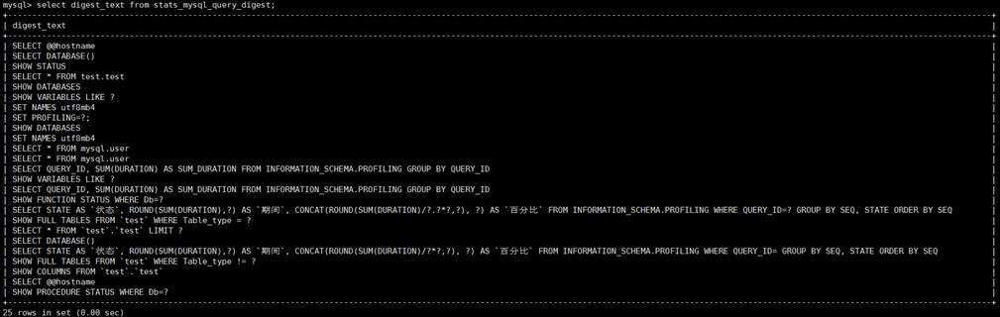

ProxySQL安装与配置
2017/08/23
posted in
ProxySQL
2017/08/23
posted in
ProxySQL
登录到管理端口，使用show databases;

在管理端口中有4个库，分别是：
Admin：默认数据库，存放服务器、用户、路由等的配置信息。以”runtime_“开头的表是当前运行中的配置，不能直接修改。通过修改没有前缀的表，使用”LOAD“加载配置，使用”SAVE“持久化配置。
Disk：存储配置的SQLite数据库
Stats：各种命令的统计信息
Monitor：对于后端数据库的监控信息
各种配置所使用到的表都在main库中
mysql> show tables from main;
| tables | 说明 |
|---|---|
| global_variables | 全局变量，，具体可见https://github.com/sysown/proxysql/wiki/Global-variables |
| mysql_collations | 字符集相关 |
| mysql_group_replication_hostgroups | MySQL Group Replication信息 |
| mysql_query_rules | 路由规则信息 |
| mysql_replication_hostgroups | 定义hostgroup的主从信息 |
| mysql_servers | 后端MySQL节点 |
| mysql_users | 用户配置 |
| proxysql_servers | |
| runtime_global_variables | |
| runtime_mysql_group_replication_hostgroups | |
| runtime_mysql_query_rules | |
| runtime_mysql_replication_hostgroups | |
| runtime_mysql_servers | |
| runtime_mysql_users | |
| runtime_proxysql_servers | |
| runtime_scheduler | |
| scheduler | 定时器 |
数据库节点设置（mysql_servers）
用户设置（mysql_users）
主从关系设置（mysql_replication_hostgroups）
路由规则设置（mysql_query_rules）
Proxysql会根据主键rule_id的顺序加载路由规则。
Username/client_addr/schemaname：只有用户、地址和schema匹配时规则才会生效。
Proxysql会先检查flagIN=0的规则
如果规则匹配，且flagIN=flagOUT或者flagOUT=NULL或者apply=1，则应用这条规则；否则，根据flagOUT的值，去匹配下一条flagIN等于该值的规则
Digest/match_digest/match_pattern：这三个值都是用来匹配查询的。
Digest匹配的值类似于stats_mysql_query_digest表中的digest列

Match_digest匹配的值类似于stats_mysql_query_digest中的digest_text列

Match_pattern匹配的是未经修改过的SQL语句
Negate_match_pattern：对match_digest/match_pattern的匹配值取反
重写SQL：重写SQL最好使用match_pattern作为匹配项，使用replace_pattern作为重写后的SQL，二者都遵循正则表达式